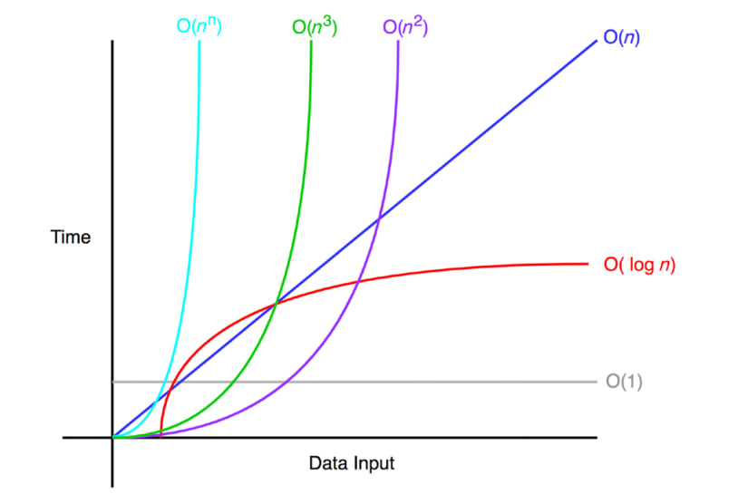

가장 원초적이고 직관적인 방법은 말 그대로 시간을 재는 것 이다.
프로그램이 시작될 때의 시간을 기록하고, 끝났을 때의 시간을 기록해서 그 차이를 구하는 방식이다.
import time
def sum_n(n):
result = 0
for i in range(1, n + 1):
result += i
return result
# 측정 시작
start_time = time.time()
sum_n(10000000) # 천만 번 반복
# 측정 종료
end_time = time.time()
print("실행 시간:", end_time - start_time, "초")
위 코드를 실행하면 실행 시간 : 0.452초와 같이 결과가 나온다.
하드웨어, 소프트웨어, 언어의 차이 때문에 이 알고리즘이 객관적으로 좋은가? 답은 할 수 없다.
알고리즘의 성능 (연산 횟수)를 측정 할 때,
입력의 크기 $N$이 무한대로 커진다고 가장하고 최고차항의 추세만을 수학적으로 표현하는 것이다.
Big-$\Omega$ 알고리즘은 "아무리 빨리 끝나도 이 정도 시간은 걸린다."로,
가장 운이 좋은 하한선을 얘기한다.
$f(N) \ge c \cdot g(N)$
수학적 의미는 다음과 같다.
Big-$O$ 알고리즘은 "아무리 늦게 끝나도 이 시간 내로는 끝난다"로,
가장 운이 나쁜 상한선을 얘기한다.
$f(N) \le c \cdot g(N)$
수학적 의미는 다음과 같다.
Big-$\Theta$ 알고리즘은 "평균적으로 딱 이정도 걸린다."
$c_1 \cdot g(N) \le f(N) \le c_2 \cdot g(N)$
수학적 의미는 다음과 같다.
만약 100개의 데이터를 선형탐색 한다면,
운이 가장 좋은케이스는 1번만에, 가장 안좋은 케이스는 마지막에 나오게 된다.
이 경우의 시간 복잡도는 각각 $\Omega(1)$, $O(N)$이 된다.
평균적으로는 중간쯤에서 데이터를 찾게 되므로 약 $N/2$번을 탐색하게 될 것이다.
하지만 점근적 표기법에서는 $1/2$이나 $2$ 같은 상수(계수)를 무시하고 최고차항만 남기는 규칙이 있다.
따라서 평균적인 경우의 시간 복잡도는 $\Theta(N/2)$가 아니라 상수를 떼어낸 $\Theta(N)$으로 표기한다.
Big-$\Omega$는 현실에서 '최선의 경우'에 기대는 케이스로, 잘 사용하지 않는다.
Big-$O$는 최악의 경우로 알고리즘의 성과를 평과할 때 Big-$O$를 사용한다.
Big-$\Theta$는 학술적으로 이상적인 표기법이지만, 복잡한 알고리즘에선 계산이 까다로워 Big-$O$를 쓴다.

데이터가 늘어 날 때 우리 코드는 어떻게 반응하는가?
시간 복잡도는 단순히 몇 초가 걸리는가 를 말하는 것이 아니다.
입력 데이터의 크기($n$)이 커짐에 따라
연산횟수가 얼마나 가파르게 증가하는지를 나타낸 지도이다.
가장 이상적인 경우로, 데이터가 1개든 100개든 처리 시간이 똑같다.
$arr[5]$ 와 같이, 배열에서 인덱스로 값을 가져오거나 변수에 값을 대입하는 것이 대표적인 예제이다.
매우 효율적인 알고리즘으로 데이터가 2배로 늘어 날 때 연산은 1번만 더 늘어난다.
업다운 게임을 예제로 1~100 사이의 숫자를 맞출 때 매번 중간값을 부르면 후보군이 절반이 된다.
이 것이 이진 탐색의 핵심이다.
가장 흔히 볼 수 있는 형태로 데이터에 양에 비례해서 시간이 늘어난다.
배열을 for문으로 모든 요소를 print한다 생각하면 된다.
많은 효율적인 정렬 알고리즘이 이 복잡도를 가진다.
$O(n)$보다는 약간 느리지만, $O(n^2)$보다는 압도적으로 빠르다.
데이터를 반으로 쪼개서 정렬한 뒤 합치는 병합정렬이 대표적인 예이다.
보통 중첩 반복문에서 나타나며, 데이터가 늘어날 수록 성능이 나빠진다.
2중배열의 모든 요소를 for문을 2번 호출하여 조회하는 과정이다.
우리가 다룰 데이터는 수백만, 수천만 건에 달할 수 있다.
만약 $O(n^i)$알고리즘을 쓴다면 속도가 느려지거나, 데이터가 늘어나면 시스템이 멈출 것이다.
항상 내 코드는 데이터가 100배 늘어나도 버틸 수 있는가? 생각하며 코딩해야 한다.